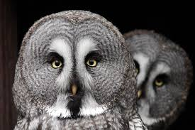

Сове или ноћне грабљивице (лат.Strigiformes ) представљају ред углавном усамљених птица грабљивица у који се данас убраја око 250 врста.
Лове плен углавном ноћу у чему им помаже претежно сива боја и скоро нечујан лет.
Деле се у две савремене фамилије праве сове (Strigidae) и кукувије (Tytonidae).
Углавном се хране ситним сисарима, птицама и инсектима, а поједине врсте се хране и рибом. Живе на свим континентима осим на Антарктику, великом делу Гренланда и појединим острвима.
Сове карактерише оштар кљун, већ од корена снажно повијен према доле, који им служи за кидање плена, док су канџе дуге, јако савијене и врло шиљасте, а користе их као оружје за убијање и дохватање плена. Спољни од три предња прста на ногама је удешен да се може кретати као обртни прст, што је свакако од користи за дохватање малих, хитрих мишева, али служи и за добро обухватање гране, као и за седеће и пентрање по дрвећу. Поред тога, имају прецизан слух и вид, који им омогућавају да и при најмањој светлости током ноћи успешно лове.
Има крупне, избуљене и округле очи на предњој страни главе које јој омогућавају да добро процени удаљеност и брзину плена. Очи сове су непокретне, као и у већине птица, те мора да окреће главу да би преусмерила поглед. Главу може да окрене и до 180°, док се за неке врсте тврди да могу и до 270°.
Совино перје је јако меко, рашчешљано, еластично и повија се под најмањим притиском ваздуха. На предњем делу крила та рашчешљаност је толико велика да поменута пера имају тестераст облик. Код сове су и ноге обрасле густо ројтастим перјем, тако да ни на том делу тела не може да се јави оштар шум. Као и код свих добрих летача, и код сове је крило дугачко, ка врху постепено сужено, знатно је широко и издубљено у виду корита. Нарочита творевина коју треба истаћи је чекињасто перје, које је израсло свуд око основе кљуна. Како је ово перје при дну стабла обложено великим бројем тактилних телашца, оно служи као орган за пипање.
Док друге птице имају, по правилу, мале округле слушне отворе, код сове су ти отвори вертикално издужени и готово дуги скоро колико и сама глава. Међутим, слушни отвори јој нису смештени симетрично, већ је десни је мало изнад левог. Та асиметрија је од врсте до врсте мање или више изражена, али постоји код свих. Осим тога, многе сове имају упадљив „вео” око очију од паперјастог венца који усмерава звук према ушима. Заједно са пернатим ушима, тај вео јој служи за показивање расположења и често је упадљиве боје. Улогу слушних шкољки играју кратка и тврда пера која су смештена испред и иза слушног отвора и помажу при одређивању смера звука. Из истог разлога, сова има ширу лобању него већина птица. Због ове ширине, звук који долази са једне стране до једног ува, долази делић секунде касније до другог ува, што такође помаже у лоцирању предајника звука.